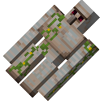
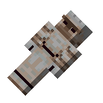
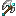

傀儡装配
金属傀儡的组装和升级手册

傀儡种类和工具可制作的傀儡种类，以及各种手杖
 如何创造傀儡golems/a1_craft
如何创造傀儡golems/a1_craft 如何升级傀儡golems/a2_upgrade
如何升级傀儡golems/a2_upgrade- 大型金属傀儡golems/b1_metal_golem

人形傀儡golems/b2_humanoid_golem 犬型傀儡golems/b3_dog_golem
犬型傀儡golems/b3_dog_golem 回收手杖golems/c1_retrieval_wand
回收手杖golems/c1_retrieval_wand 命令手杖golems/c2_command_wand
命令手杖golems/c2_command_wand 召唤手杖golems/c3_summon_wand
召唤手杖golems/c3_summon_wand 骑乘手杖golems/c4_rider_wand
骑乘手杖golems/c4_rider_wand 编队手杖golems/c5_squad_wand
编队手杖golems/c5_squad_wand 配置卡golems/d1_config_card
配置卡golems/d1_config_card 傀儡皮肤golems/d2_golem_facade
傀儡皮肤golems/d2_golem_facade
斩铁巨斧golems/d3_slicing_axe
 材料种类
材料种类
可以用于制作傀儡的材料
 铜materials/vanilla_copper
铜materials/vanilla_copper- 铁materials/vanilla_iron
 金materials/vanilla_gold
金materials/vanilla_gold 下界合金materials/vanilla_netherite
下界合金materials/vanilla_netherite 幽匿materials/vanilla_sculk
幽匿materials/vanilla_sculk 铁树materials/tf_ironwood
铁树materials/tf_ironwood 钢叶materials/tf_steeleaf
钢叶materials/tf_steeleaf 骑士金属materials/tf_knightmetal
骑士金属materials/tf_knightmetal 炽铁materials/tf_fiery
炽铁materials/tf_fiery 锌materials/cr_zinc
锌materials/cr_zinc 安山合金materials/cr_andesite_alloy
安山合金materials/cr_andesite_alloy 黄铜materials/cr_brass
黄铜materials/cr_brass 列车机壳materials/cr_railway
列车机壳materials/cr_railway 纸板materials/cr_cardboard
纸板materials/cr_cardboard 生命materials/lc_totemic_gold
生命materials/lc_totemic_gold 海神materials/lc_poseidite
海神materials/lc_poseidite 潜影materials/lc_shulkerate
潜影materials/lc_shulkerate 永恒materials/lc_eternium
永恒materials/lc_eternium 烈焰钢materials/bg_brimsteel
烈焰钢materials/bg_brimsteel 魔钢materials/bot_manasteel
魔钢materials/bot_manasteel 泰拉钢materials/bot_terrasteel
泰拉钢materials/bot_terrasteel 源质钢materials/bot_elementium
源质钢materials/bot_elementium 腾炎materials/ct_ignitium
腾炎materials/ct_ignitium 凋零合金materials/ct_witherite
凋零合金materials/ct_witherite 咒魂materials/ct_cursium
咒魂materials/ct_cursium 风暴materials/ct_storm
风暴materials/ct_storm 末地守卫materials/ct_ender_guardian
末地守卫materials/ct_ender_guardian 远古金属materials/ct_ancient_metal
远古金属materials/ct_ancient_metal 紫水晶青铜materials/tinker_amethyst_bronze
紫水晶青铜materials/tinker_amethyst_bronze 玛玉灵materials/tinker_manyullyn
玛玉灵materials/tinker_manyullyn 黑色科林斯青铜materials/tinker_hepatizon
黑色科林斯青铜materials/tinker_hepatizon 钴materials/tinker_cobalt
钴materials/tinker_cobalt 玫瑰金materials/tinker_rose_gold
玫瑰金materials/tinker_rose_gold 龙炎钢materials/iaf_fire
龙炎钢materials/iaf_fire 龙霜钢materials/iaf_ice
龙霜钢materials/iaf_ice 龙霆钢materials/iaf_lightning
龙霆钢materials/iaf_lightning 诅咒金属materials/goety_cursed_metal
诅咒金属materials/goety_cursed_metal 黑暗金属materials/goety_dark_metal
黑暗金属materials/goety_dark_metal- 神灵金属materials/goety_apocalyptium
 混沌materials/lh_chaotic
混沌materials/lh_chaotic 千锻钢materials/mowzies_wroughtnaut
千锻钢materials/mowzies_wroughtnaut 奇迹materials/lh_miraculous
奇迹materials/lh_miraculous ATMmaterials/atm_allthemodium
ATMmaterials/atm_allthemodium 浮云materials/lm_cloud
浮云materials/lm_cloud 熔融金属materials/lm_molten_metal
熔融金属materials/lm_molten_metal 振金materials/atm_vibranium
振金materials/atm_vibranium 难得素materials/atm_unobtainium
难得素materials/atm_unobtainium 糖果materials/ac_candy
糖果materials/ac_candy 磁力materials/ac_magnetic
磁力materials/ac_magnetic 核能materials/ac_nuclear
核能materials/ac_nuclear
升级模板
强化你的傀儡
 镀层升级upgrades/cr_coating
镀层升级upgrades/cr_coating 机械手升级upgrades/cr_push
机械手升级upgrades/cr_push 远古遗魂升级upgrades/ct_ancient_remnant
远古遗魂升级upgrades/ct_ancient_remnant 末影守卫升级upgrades/ct_ender_guardian
末影守卫升级upgrades/ct_ender_guardian 利维坦升级upgrades/ct_leviathan
利维坦升级upgrades/ct_leviathan 下界合金巨兽升级upgrades/ct_netherite_monstrosity
下界合金巨兽升级upgrades/ct_netherite_monstrosity 斯库拉升级upgrades/ct_scylla
斯库拉升级upgrades/ct_scylla 使徒晋升升级upgrades/goety_apostle
使徒晋升升级upgrades/goety_apostle 使徒升级: 炎爆upgrades/goety_fire_blast
使徒升级: 炎爆upgrades/goety_fire_blast 使徒升级: 燃烧龙卷风upgrades/goety_fire_tornado
使徒升级: 燃烧龙卷风upgrades/goety_fire_tornado 使徒升级: 狱火爆弹upgrades/goety_hell_blast
使徒升级: 狱火爆弹upgrades/goety_hell_blast 使徒升级: 狱火束upgrades/goety_hell_bolt
使徒升级: 狱火束upgrades/goety_hell_bolt 使徒升级: 狱云upgrades/goety_hell_cloud
使徒升级: 狱云upgrades/goety_hell_cloud 灵魂收割升级upgrades/goety_soul
灵魂收割升级upgrades/goety_soul 使徒头衔: 憎恶本质upgrades/gr_abhorrent
使徒头衔: 憎恶本质upgrades/gr_abhorrent 使徒头衔: 十恶不赦upgrades/gr_atrocious
使徒头衔: 十恶不赦upgrades/gr_atrocious 使徒头衔: 天启饥荒upgrades/gr_profane
使徒头衔: 天启饥荒upgrades/gr_profane 使徒头衔: 可怖之物upgrades/gr_terrible
使徒头衔: 可怖之物upgrades/gr_terrible 伤害升级 Vupgrades/lc_attack
伤害升级 Vupgrades/lc_attack 药水升级：魂火upgrades/lc_flame
药水升级：魂火upgrades/lc_flame 凋零护体升级upgrades/lc_force_field
凋零护体升级upgrades/lc_force_field 药水升级：寒流upgrades/lc_freezing
药水升级：寒流upgrades/lc_freezing 净化升级upgrades/lc_potion_cleanse
净化升级upgrades/lc_potion_cleanse 药水升级：诅咒upgrades/lc_potion_curse
药水升级：诅咒upgrades/lc_potion_curse 药水升级：禁锢upgrades/lc_potion_incarceration
药水升级：禁锢upgrades/lc_potion_incarceration 速度升级 Vupgrades/lc_speed
速度升级 Vupgrades/lc_speed 瞬移升级upgrades/lc_teleport
瞬移升级upgrades/lc_teleport 恶意核心升级upgrades/lh_core
恶意核心升级upgrades/lh_core 恶意升级：药水upgrades/lh_potion
恶意升级：药水upgrades/lh_potion 恶意升级：保护upgrades/lh_protection
恶意升级：保护upgrades/lh_protection 恶意升级：反射upgrades/lh_reflect
恶意升级：反射upgrades/lh_reflect 恶意升级：再生upgrades/lh_regen
恶意升级：再生upgrades/lh_regen 恶意升级：神速upgrades/lh_speed
恶意升级：神速upgrades/lh_speed 恶意升级：重装upgrades/lh_tank
恶意升级：重装upgrades/lh_tank 雷暴升级upgrades/lm_thunder
雷暴升级upgrades/lm_thunder 千锻震升级upgrades/mowzies_wroughtnaut
千锻震升级upgrades/mowzies_wroughtnaut 砷铅铁升级upgrades/tf_carminite
砷铅铁升级upgrades/tf_carminite 炽铁升级upgrades/tf_fiery
炽铁升级upgrades/tf_fiery 铁木升级upgrades/tf_ironwood
铁木升级upgrades/tf_ironwood 骑士升级upgrades/tf_knightmetal
骑士升级upgrades/tf_knightmetal 娜迦升级upgrades/tf_naga
娜迦升级upgrades/tf_naga 钢叶升级upgrades/tf_steeleaf
钢叶升级upgrades/tf_steeleaf 钟升级upgrades/vanilla_bell
钟升级upgrades/vanilla_bell 钻石升级upgrades/vanilla_diamond
钻石升级upgrades/vanilla_diamond 绿宝石升级upgrades/vanilla_emerald
绿宝石升级upgrades/vanilla_emerald 透视升级upgrades/vanilla_ender_sight
透视升级upgrades/vanilla_ender_sight 抗火升级upgrades/vanilla_fire_immune
抗火升级upgrades/vanilla_fire_immune 漂浮升级upgrades/vanilla_float
漂浮升级upgrades/vanilla_float 金苹果升级upgrades/vanilla_gold
金苹果升级upgrades/vanilla_gold 辅助升级：炼药锅upgrades/vanilla_meta_cauldron
辅助升级：炼药锅upgrades/vanilla_meta_cauldron 辅助升级：多才多艺upgrades/vanilla_meta_talented
辅助升级：多才多艺upgrades/vanilla_meta_talented 下界合金升级upgrades/vanilla_netherite
下界合金升级upgrades/vanilla_netherite 拾取升级upgrades/vanilla_pickup
拾取升级upgrades/vanilla_pickup 玩家免疫升级upgrades/vanilla_player
玩家免疫升级upgrades/vanilla_player 药水升级：缓慢upgrades/vanilla_potion_slowness
药水升级：缓慢upgrades/vanilla_potion_slowness 药水升级：虚弱upgrades/vanilla_potion_weakness
药水升级：虚弱upgrades/vanilla_potion_weakness 药水升级：凋零upgrades/vanilla_potion_wither
药水升级：凋零upgrades/vanilla_potion_wither 石英升级upgrades/vanilla_quartz
石英升级upgrades/vanilla_quartz- 回收升级upgrades/vanilla_recycle
 骑乘升级upgrades/vanilla_ride
骑乘升级upgrades/vanilla_ride 体型升级upgrades/vanilla_size
体型升级upgrades/vanilla_size 速度升级upgrades/vanilla_speed
速度升级upgrades/vanilla_speed 海绵升级upgrades/vanilla_sponge
海绵升级upgrades/vanilla_sponge 游泳升级upgrades/vanilla_swim
游泳升级upgrades/vanilla_swim 导电升级upgrades/vanilla_thunder_immune
导电升级upgrades/vanilla_thunder_immune